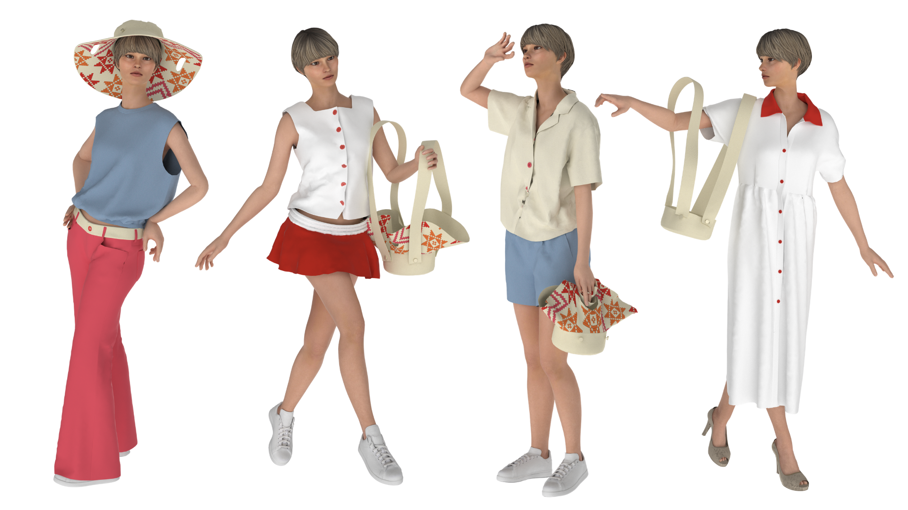
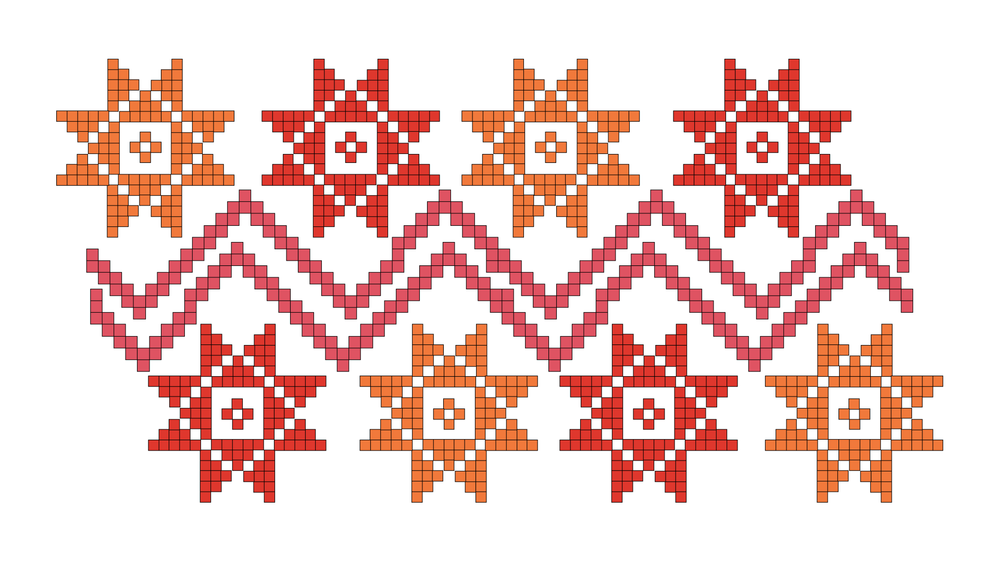

Ronda
Ronda, inspirado en el Sombrero Vueltiao, reinterpreta la lógica circular y estructural del sombrero tradicional colombiano, incorporando un patrón geométrico compuesto por estrellas y líneas en zigzag, evocando el ritmo del tejido manual.
La pieza se transforma mediante un sistema de cremalleras y tiras desmontables, permitiendo cuatro configuraciones: sombrero, bolso amplio con tiras largas, bolso amplio de mano y bolso pequeño de tiras largas.
Configuración No. 1
Sombrero

Configuración No. 2
Bolso amplio con tiras largas
Configuración No. 3
Bolso amplio de mano
Configuración No. 4
Bolso pequeño de tiras largas